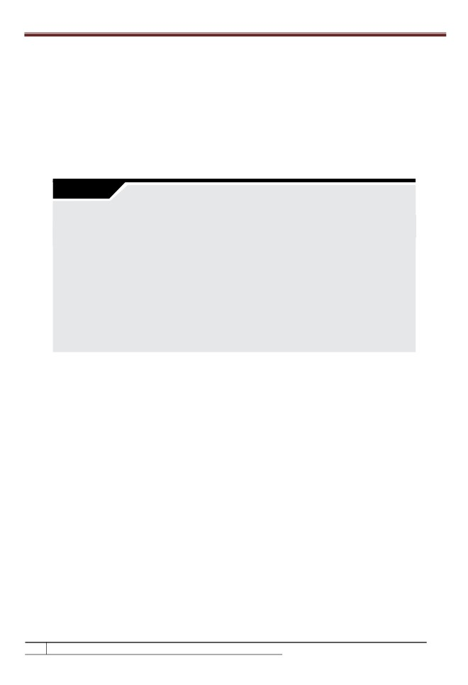
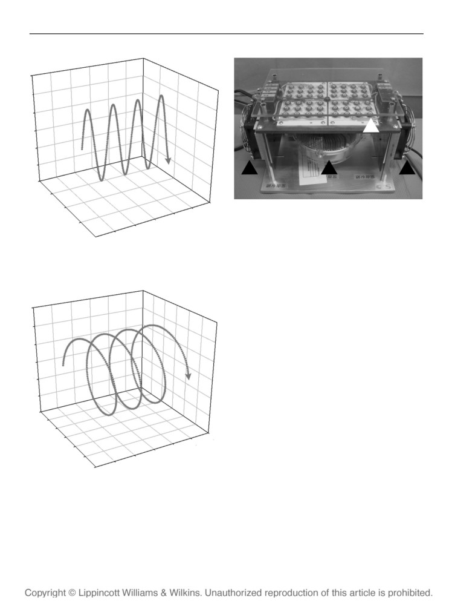
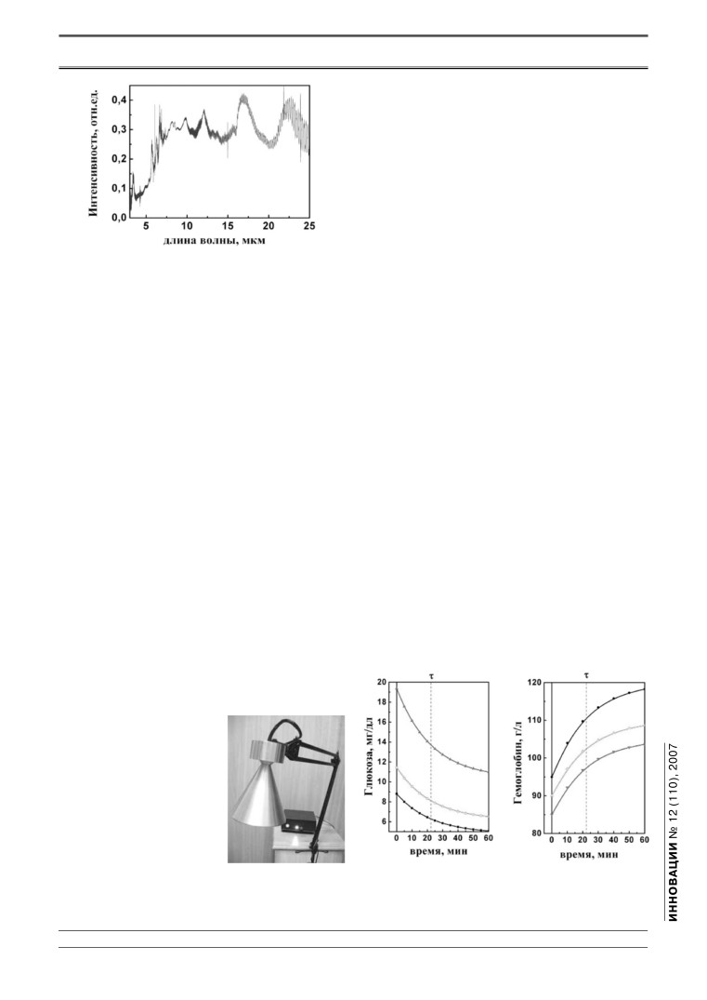
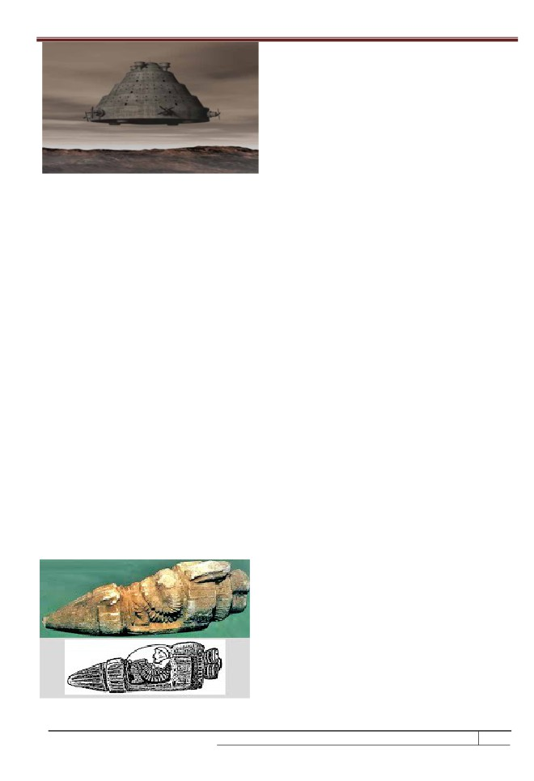
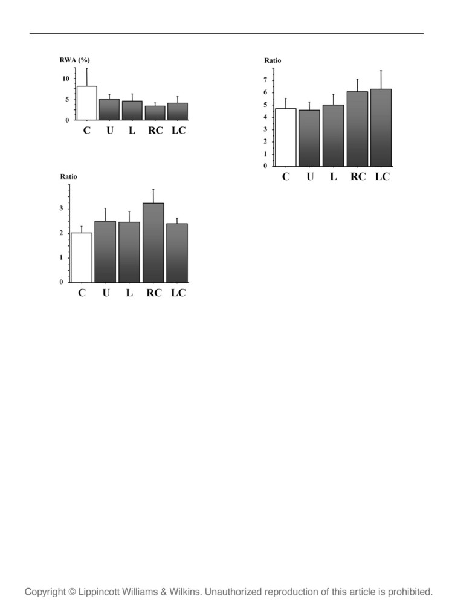
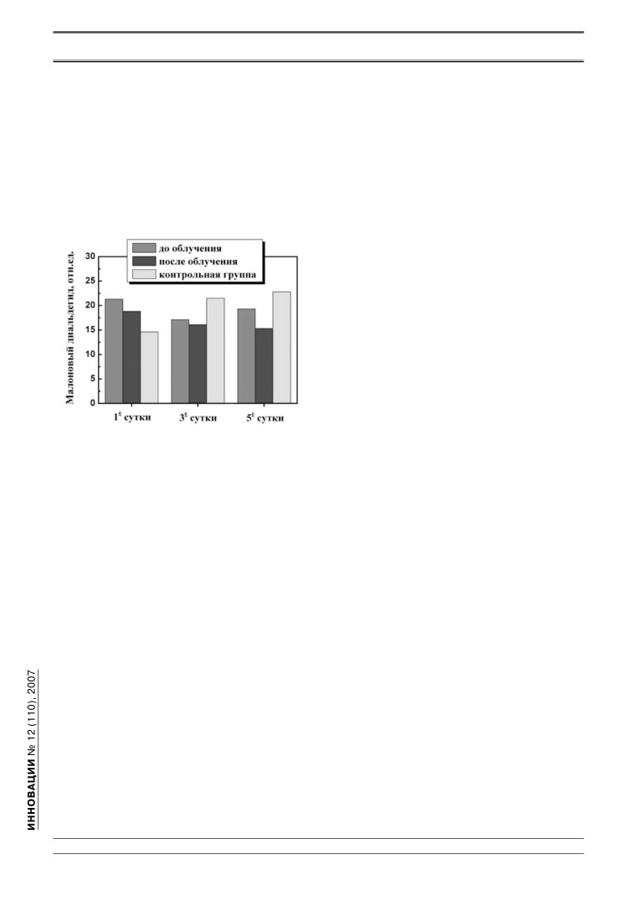

Инновационная Россия
Приборы инфракрасной
и терагерцевой наноэлектроники
в биологии и медицине
Н. Т. Баграев,
Л. Е. Клячкин,
А. М. Маляренко,
Б. А. Новиков
д. ф.-м. н.
к. ф.-м. н.
к. х. н.
ООО «Дипольные структуры»
Инфракрасное и терагерцевое излучение все
го излучения. Разработанный для практической
интенсивнее используется при создании новых
реализации этих задач аппарат «ИК-Диполь»
типов диагностической медицинской аппарату-
генерирует излучение дальнего ИК диапазона с
ры, охранных и контролирующих систем, при-
длинами волн 1-56 мкм с терагерцевой модуля-
меняемых, в частности, в рамках антитеррори
цией 40 ГГц — 3,5 ТГц во всем спектре излучения.
стических программ. Однако в последнее время
Основой для создания данного прибора стала раз-
становится ясно, что инфракрасное излучение,
работка блока гибких технологических процессов
модулированное в терагерцевом диапазоне, пред-
в рамках кремниевой планарной нанотехноло-
ставляет интерес при создании приборов для
гии. Дальнейшее развитие данного направления
терапевтического лечения и профилактики раз-
кремниевой опто- и наноэлектроники позволило
личных заболеваний, большинство важнейших
разработать и изготовить панельный эмиттер
биохимических реакций в человеческом организме
«Инфратератрон», с помощью которого оказа-
может быть оптически стимулировано именно в
лось возможным лечить ожоги большой площади
этом частотном интервале электромагнитно-
в сочетании с антишоковым воздействием.
ло к тому, что эта область спектра в литературе получи-
Введение
ла обозначение как «терагерцевая щель (запрещенная
ерагерцевое излучение (ТГц), или «терагер-
зона)». Интересно, что «терагерцевая щель» проявля-
цы», охватывает широкий диапазон спектра
ется в спектре пропускания земной атмосферы — так
Т
электромагнитного излучения между 100 ГГц
называемых атмосферных окнах, т. е. терагерцевая
и 30 ТГц (длина волны излучения приблизительно
составляющая спектра космического излучения пол-
от 3 мм до 1 мкм). Этот диапазон граничит с микро-
ностью поглощается в земной атмосфере. Однако в
волновым диапазоном и простирается на дальний и
последнее время прогресс в области нанотехнологии
средний инфракрасный (ИК) диапазоны.
полупроводников и сверхпроводников сделал воз-
Еще совсем недавно для того чтобы генерировать
можным получение твердотельных приборов, которые
терагерцевое излучение, необходимо было исполь-
способны излучать и детектировать в терагерцевом
зовать громоздкую и дорогостоящую аппаратуру, по-
диапазоне длин волн [1, 2]. Таким образом, прежде не-
добную лазерам на свободных электронах, лампам
доступная область спектра стала реально достижимой
бегущей волны (ЛБВ) или термическим источникам
и таит в себе огромный потенциал для применения в
слабого некогерентного излучения. Детектирование
современной науке, особенно в медицине.
терагерцевого излучения было очень непростой зада-
Терагерцевые кванты имеют намного меньшую
чей и требовало охлаждаемых жидким гелием боло-
энергию, чем рентгеновские, и не представляют иони-
метров с низким уровнем шума. Поэтому отсутствие
зационной опасности для биологических тканей. При
надежно работающих источников и детекторов приве-
взаимодействии с разнородными биологическими
Инновационный потенциал науки
99

Инновационная Россия
тканями сравнительно длинноволновое терагерцевое
излучение может проникать намного глубже, чем ви-
димый или ближний ИК-свет, поскольку более длин-
новолновое излучение менее подвержено эффектам
рассеяния. Кроме того, терагерцевое излучение воз-
буждает вращательные и колебательные моды неко-
торых биологических молекул, связи внутри которых
«трясутся» в терагерцевом частотном диапазоне [3].
Очевидно, что, несмотря на некоторые трудности,
терагерцевые излучатели являются весьма перспек-
тивной заменой рентгеновским аппаратам не только
в медицине, но и в системах охраны и обеспечения
безопасности, например в аэропортах, вокзалах и т. п.
Кроме того, безусловный интерес представляет ис-
пользование неагрессивного терагерцевого излуче-
ния для непосредственного терапевтического воз-
Рис. 1. ИК-излучатель, выполненный в геометрии
действия на биологические ткани.
холловского мостика на основе сверхузкой кремниевой
Причем наибольший интерес представляет ис-
квантовой ямы р-типа проводимости, ограниченной
пользование сочетания терагерцевого и ИК-излуче-
дельта-барьерами на поверхности
ния, поскольку ИК-излучение может стимулировать
монокристаллического кремния n-типа
важнейшие биохимические реакции в человеческом
(a) со встроенными микрорезонаторами, настроенными на длины
организме, тогда как терагерцевая составляющая из-
волн из спектрального ИК-диапазона биохомических реакций; фраг-
лучения обеспечивает резонансный эффект данного
мент СТМ изображения
воздействия вследствие отмеченной выше «тряски»
(b) показывает микрорезонатор для стимулирования ИК-излу-
чением реакций в гемоглобине; при варьировании расположением и
связей в биомолекулах. Понятно, что в случае опти-
размерами контактов предусматриваются возможности для реа-
ческого диапазона длин волн более коротковолновое
лизации микроволноволновых резонаторов
ИК-излучение должно быть модулировано более
(с) для модуляции ИК-излучения в тера- и гигагерцевом частотных
длинноволновым терагерцевым излучением. Пре-
диапазонах.
имущества такого симбиоза очевидны, но до послед-
него времени техническая реализация источников с
ральная характеристика которого отражает резонанс-
подобными характеристиками была практически не-
ный характер оптических переходов между уровнями
возможной. Однако разработанная авторами данной
размерного квантования (рис. 2, 3).
статьи группа гибких кремниевых нанотехнологий
Одновременно нанотехнология таких квантово-
позволила создать эффективные ИК-излучатели в
размерных р-n переходов позволяет путем использо-
широком диапазоне длин волн с терагерцевой мо-
вания процессов самоорганизации встроенных в их
дуляцией во всем спектре излучения. Перспективам
плоскость наноструктур формировать систему фрак-
применения этих приборов в практической медицине
тальных микрорезонаторов (рис. 1), настроенных на
посвящена данная статья.
характерные длины волн ИК-излучения, что делает
возможным многократное усиление его интенсивно
Техническая реализация источников
ИК-излучения с терагерцевой модуляцией
Задача получения излучения дальнего ИК-диа-
пазона, модулированного в терагерцевом диапазоне,
была успешно решена с помощью твердотельных из-
лучателей, изготовленных с использованием крем-
ниевой нанотехнологии на основе монокристалли-
ческого кремния. Излучатели представляют собой
управляемые генераторы ИК-излучения дальнего
диапазона длин волн от 1 до 56 мкм с терагерцевой
модуляцией во всем спектре излучения. Решение
этой задачи стало возможным благодаря реализа-
Рис. 2. Спектральные характеристики
ции квантоворазмерных р-n переходов на поверх-
ИК-излучателя с терагерцевой модуляцией
ности монокристаллического кремния с глубиной
Аппарат генерирует ИК-излучение непрерывного спектра в диа-
от 20 нм до 30 нм, которые содержат каскады сверх
пазоне от 1 до 56 мкм, модулированное в частотном диапазоне
узких кремниевых квантовых ям (СККЯ) шириной
40 ГГц ¸1200 ГГц, который соответствует частотам колебаний
2 нм, ограниченных дельта-барьерами шириной 3 нм
связей в белковых молекулах. Кривая 1 — ток 20мА, мощность
(рис. 1). В процессе протекания тока через каскад
29,24 мВт; кривая 2 — ток 30мА, мощность 43,84 мВт; кривая 3 —
СККЯ возникает интенсивное ИК-излучение, спект-
ток 40мА, мощность 58,29 мВт.
100
Инновационный потенциал науки

Инновационная Россия
язвы желудка и двенадцатиперстной кишки; артрозы;
пародонтозы; термические и радиационные пораже-
ния кожного покрова; рубцовые деформации после
хирургических операций. Следует отметить, что все
оптические системы, используемые в настоящее вре-
мя в практической медицине и физиотерапии, излу-
чают в ближнем ИК-диапазоне длин волн (не более
3 мкм), тогда как излучение аппарата «ИК-Диполь»
дальнего ИК-диапазона (1 мкм ¸ 56 мкм), как ука-
зано выше, соответствует энергетическому диапазону
биохимических реакций в человеческом организме.
Данная аппаратура не имеет мировых аналогов.
Рис. 3. Часть спектра ИК-излучения аппарата
Технология и метод были запатентованы в 1994 году.
«ИК-Диполь» с глубокой терагерцевой модуляцией,
Настоящая разработка защищена патентами Россий-
полученная методом ИК-Фурье спектрометрии
ской Федерации и международным патентом.
Методики лечебной терапии с помощью аппара-
Модуляция ИК-излучения осуществляется на частотах 40 ГГц,
80 ГГц и 1200 ГГц. В аппарате «ИК-Диполь» реализован принцип
та «ИК-Диполь» были разработаны и апробированы
частотной модуляции, а именно: ИК-излучение, являющееся несу-
в различных медицинских учреждениях С.-Петер-
щим, модулировано терагерцевым излучением
бурга и Москвы, среди которых в первую очередь
следует выделить Военно-медицинскую академию
сти. Кроме того, разработанная нанотехнология полу-
им. С. М. Кирова, 1-й Медицинский университет им.
чения дельта-барьеров, ограничивающих сверхузкие
акад. И. П. Павлова, 1-ю Градскую больницу Москвы.
СККЯ, позволяет их использовать в качестве гене-
Кроме того, данная аппаратура использовалась в це-
раторов тера- и гигагерцевого излучения, которое, в
лях восстановления иммуногенных связей и физио-
свою очередь, играет роль модулирующего для ИК-
логических характеристик организма после длитель-
излучения (рис. 3). Глубина терагерцевой модуляции
ного умственного напряжения и больших физических
может быть резко усилена, если создать систему мик-
нагрузок. Стимулирующее воздействие данных мето-
роволновых резонаторов, варьируя геометрическими
дик на основе дальнего ИК-облучения было также
размерами приборной структуры и распределением
продемонстрировано путем активизации процессов
в ней электрического поля в условиях напряжения,
кровообращения в конечностях и усиления функцио-
приложенного к контактам (рис. 1).
нальной активности организма для различных групп
Разработанная нанотехнология получения крем-
спортсменов высшей квалификации.
ниевых ИК-излучателей представляет собой новую
Ниже представлены характерные результаты для
версию кремниевой ангстремной планарной техно-
снижения уровня сахара и увеличения гемоглобина в
логии. В настоящее время подобных исследований
крови пациентов при использовании аппарата «ИК-
не проводится ни в одной лаборатории мира. Эта на-
Диполь», спектр излучения которого охватывает
нотехнология на современном этапе развития крем-
спектральный диапазон оптически стимулируемых
ниевой наноэлектроники должна заменить извест-
реакций получения ГТФ и оксигенации. Облучение
ную субмикронную технологию и может оказаться
проводилось в область предплечья правой руки. В
актуальной для целого ряда кремниевых приборов
процессе облучения сделаны контрольные заборы
(процессоров, микрохолодильников, излучателей,
крови для измерения содержания сахара и уровня
фотодиодов и светодиодов), а также послужить в
дальнейшем базисом НИОКР по разработке микро-
резонаторов на различные длины волн в видимом и
инфракрасном диапазоне оп-
тического спектра.
Во второй половине 1990-х
годов авторами идеи была
разработана малогабаритная
аппаратура инфракрасной те-
рапии «ИК-Диполь» (рис. 4),
которая успешно использу-
ется в травматологии и спор-
тивной медицине, а также для
лечения целого ряда заболе-
ваний, таких как ангеопатия
Рис. 4. Аппаратура
Рис. 5. Динамика изме-
Рис. 6. Динамика изме-
при сахарном диабете; трофи-
инфракрасной
нения уровня сахара в
нения уровня гемоглоби-
ческие язвы и пролежни; не-
терапии
крови пациента во время
на в крови пациента во
осложненные и хронические
«ИК-Диполь»
ИК-облучения
время ИК-облучения
Инновационный потенциал науки
101

Инновационная Россия
гемоглобина. Соответствующие кинетические зави-
де у различных биологических объектов, однако таких
симости представлены на рис. 5 и 6.
экспериментов с человеческим сердцем до сих пор не
Обнаружено, что сахар снижается в крови паци-
проводилось. Для того чтобы определить, аккумулиру-
ентов, следуя зависимости:
ются ли HSP-72 в миокарде в процессе хирургических
операций на сердце, у 20 пациентов брались три по
следовательных биопсии: перед шунтированием, после
где I(t) — уровень сахара в крови пациента во вре-
реперфузии и после шунтирования. У 10 пациентов во
мя ИК-облучения; Iin — начальный уровень сахара
время операции кровь при прокачивании облучалась
в крови пациента перед ИК-облучением; Ilast — уста-
ИК-излучением кремниевых ИК светодиодов.
новившийся уровень сахара в крови пациента после
Биохимический анализ содержания HSP-72
окончания ИК-облучения; t — время; τ — постоян-
в человеческом сердце показал значительный эф-
ная времени. То есть кинетика снижения сахара при
фект по сравнению с другими млекопитающими
воздействии аппарата «ИК-Диполь» не очень сильно
[p(binomal)=0.01]. Было обнаружено, что концентра-
зависит от стадии развития диабетической болезни.
ция HSP-72 значительно возрастает в случае исполь-
Постоянная времени τ, характеризующая кинетику
зования ИК-излучения. У пациентов, кровь которых
спада уровня сахара в крови пациента, определенная
не подвергалась ИК-облучению, содержание HSP-72
из зависимостей на рис. 5, оказалась равной 22,5 мин.,
после реперфузии и после шунтирования по сравне-
τ также хорошо описывает соответствующие кинети-
нию с данными до шунтирования составило, соответ
ческие зависимости увеличения уровня гемоглобина,
ственно, 97,7%±8,6% и 85,3%±14,2%, в то время как у
представленные на рис. 6.
пациентов, кровь которых подвергалась ИК-облуче-
нию кремниевых ИК светодиодов, эти цифры состави-
ли 105,0%±6,0% и 104,0%±8,1%, соответственно.
где P(t) — уровень гемоглобина в крови пациента во
Исследования показали, что начальная концентра-
время ИК-облучения; Pin — начальный уровень ге-
ция HSP-72 до шунтирования была довольно высокой
моглобина в крови пациента перед ИК-облучением;
и после реперфузии и шунтирования существенно не
Plast — установившийся уровень гемоглобина в крови
изменилась. Возможно, что высокая концентрация
пациента после окончания ИК-облучения. Причем
HSP-72 в человеческом сердце типична для этого вида
начальный уровень гемоглобина слабо влияет на ки-
заболеваний, а может быть, отражает влияние тера-
нетику его возрастания в процессе облучения с помо-
пии при подготовке к операции. Вполне вероятно, что
щью аппарата «ИК-Диполь». Следует отметить, что
высокий уровень этих белков вообще характерен для
полученные результаты показывают, что при одина-
миокарда. Высокая концентрация HSP-72 в миокарде
ковой кинетике протекания оптически стимулируе-
пациентов, принявших участие в исследовании, прак-
мых биохимических реакций достигнутые в резуль-
тически не изменялась в процессе хирургического вме-
тате ИК-облучения абсолютные значения уровня
шательства. При этом ИК-облучение крови пациентов
сахара и гемоглобина в крови определяются индиви-
во время хирургической операции позволило увели-
дуальными особенностями организма пациента.
чить концентрацию HSP-72, а также стабилизировать
уровни гликогена и лактата при проведении реперфу-
зии и последующего шунтирования.
«Инфратератрон»
При ожогах большой площади часто происходит
При лечении ожогов с помощью аппарата «ИК-
нагрев человеческого тела до высокой температуры, что
Диполь» было обнаружено, что процесс заживления
сопровождается выработкой организмом БТШ. Одна-
ускоряется не только за счет улучшения микроцирку-
ко, поскольку такие ожоги сопровождаются сильным
ляции крови, но также вследствие стимуляции орга-
болевым шоком, количества БТШ явно недостаточно
низма на выработку белков теплового шока (БТШ).
для компенсации стресса, вызываемого болевым шо-
Контрольные эксперименты по генерации БТШ
ком. Поэтому очень важно, особенно в первые минуты
с помощью аппарата «ИК-Диполь» проводились в
и часы после термического поражения, создать в орга-
рамках хорошо известной методики. Увеличение
низме большую концентрацию БТШ для стабилиза-
температуры тела у кроликов и крыс приводит сер-
ции работы сердца в условиях сильного стресса. Этого
дце объектов исследования в устойчивое состоя-
можно достичь, применяя ИК-излучение панельного
ние к ишемическому воздействию. Причина такого
эмиттера, состоящего из множества ИК-излучателей
улучшения сопротивляемости организма неизвестна,
(1-56 мкм) с терагерцевой модуляцией, аналогичных
однако большое число исследователей считает, что
используемым в аппарате «ИК-Диполь».
увеличение температуры тела стимулирует синтез
Для реализации этих задач был разработан и
стрессовых белков (БТШ) в сердце [8-10].
изготовлен панельный эмиттер «Инфратератрон»
Основным белком, который синтезируется у мле-
(рис. 7), с помощью которого оказалось возможным
копитающих в момент стресса, является БТШ (HSP-
лечить ожоги большой площади в сочетании с анти-
72), который защищает клетки от стресса, а также
шоковым воздействием.
быстро накапливается в них после ишемии. HSP-72
Установка обеспечивает ИК-излучение в диа-
быстро синтезируется в результате ишемии в миокар-
пазоне длин волн от 1 до 56 мкм с терагерцевой мо-
102
Инновационный потенциал науки

Инновационная Россия
дуляцией во всем спектре
сокую эффективность применения панельного эмитте-
излучения.
Интегральная
ра «Инфратератрон» при лечении больных с тяжелыми
мощность излучения одного
термическими поражениями большой площади.
ИК-излучателя находится
В процессе исследования клинически наблюдал-
в диапазоне от 9 до 54 мВт
ся выраженный седативный эффект во время прове-
на расстоянии 20 мм от его
дения сеанса облучения. Больные отмечали ощуще-
поверхности. Интегральная
ние легкого покалывания, снижение интенсивности
мощность излучения уста-
болевых ощущений. Главным результатом является
новки на том же расстоянии
мощная антиоксидантная защита, создаваемая при
лежит в диапазоне от 972 до
использовании излучения «Инфратератрона», в пер-
5832 мВт. Минимальная пло-
вые сутки после получения тяжелых термических
Рис. 7. Панельный
щадь излучения одной сек-
поражений большой площади, которая стимулирует
эмиттер
ции составляет 300х600 мм2.
снятие шока и препятствует развитию сепсиса.
«Инфратератрон»
Настоящая разработка
При изучении влияния ИК-излучения на состоя-
в рабочем положении
защищена патентами Россий-
ние иммунной защиты получены следующие данные,
ской Федерации.
отражающие эти два фактора:
При поступлении у больных регистрировалось
Показания к применению панельного эмиттера
повышение спонтанной свободнорадикальной ак-
«Инфратератрон»
тивности клеток в среднем в 2 раза по сравнению с
•
лечение термических и иных поражений кожно-
нормальными значениями — 6,2-7,2 мВ. После се-
го покрова в сочетании с антишоковым воздей
анса облучения наблюдалось некоторое снижение
ствием;
спонтанной хемилюминесценции (ХЛ) крови.
•
ускоренное заживление ран, пролежней и трофи-
Индуцированная бактерицидная активность кле-
ческих язв большой площади, лечение послеопе-
ток была повышена в 2-3 раза по сравнению с нор-
рационных рубцовых деформаций;
мой (7,4-8,3) и еще более возрастала после сеанса
•
лечение поражений кожного покрова и ран при
облучения, особенно при поступлении. Возраста-
радиационных поражениях;
ние индуцированной ХЛ указывает на мобилиза-
•
лечение заболеваний иммунной системы;
цию бактерицидных ресурсов иммунокомпетент-
•
лечение тяжелых травм позвоночника и профилак-
ных клеток (нейтрофилов).
тика заболеваний опорно-двигательного аппарата;
При изучении антиоксидантной активности кро-
•
лечение ангеопатии при сахарном диабете;
ви у пострадавших с тяжелой термической травмой в
•
лечение различных видов артрозов, профилакти-
процессе курса облучения было выявлено возникно-
ка и лечение осложнений, возникающих при рев-
вение выраженного антиоксидантного подъема пос-
матоидном артрите;
ле первого сеанса облучения — антиоксидантная ак-
•
лечение гипотонии;
тивность возрастала в среднем в 7 раз по сравнению
•
лечение пульмонологических заболеваний;
с исходными значениями. Данная динамика связана
•
челюстно-лицевая хирургия при лечении рубцо-
с увеличением процессов индуцированной бактери-
вых деформаций на лице;
цидной активности клеток, в основе которой лежит
•
лечение неосложненных и хронических язв же-
усиление свободно-радикальных процессов, и являет-
лудка и двенадцатиперстной кишки;
ся адаптивной реакцией организма. Снижение интен-
•
терапия после хирургических операций в усло-
сивности антиоксидантных процессов на следующие
виях вывода из наркоза. Антишоковая терапия в
мобильном варианте Скорой помощи;
•
профилактика и лечение спортивной травмы;
•
фитнес.
Клинические испытания установки терагерцевой
ИК-терапии «Инфратератрон» были проведены в
НИИ Скорой помощи им. И. И. Джанелидзе (Санкт-
Петербург) (рис. 8), которые показали чрезвычайно вы-
Рис. 8. Установка
терагерцевой
ИК-терапии
«Инфратератрон»
во время
клинических
испытаний в НИИ
Рис. 9. Антиоксидантная активность крови
Скорой помощи им.
у пациентов с тяжелой термической травмой при
И. И. Джанелидзе
терапии с помощью установки «Инфратератрон»
Инновационный потенциал науки
103

Инновационная Россия
сутки носит эпизодический характер и указывает на
2)
не оказывает клинически значимого влияния на
временное истощение антиоксидантных ресурсов. В
биохимические показатели крови у тяжело обож-
дальнейшем, к пятым суткам наблюдается умеренное
женных и здоровых пациентов;
повышение антиоксидантной активности и ее норма-
3)
приводит к оптимизации продукции активных
лизация (рис. 9).
форм кислорода и усилению антиоксидантной
Изучение динамики малонового диальдегида
активности, вызывая таким образом интенсифи-
(МДА) показало, что, несмотря на более высокие ис-
кацию механизмов неспецифической резистент-
ходные уровни в исследуемой группе, курс лечения
ности пострадавших;
данным спектром излучения приводит к заметному
4)
приводит к мягкому повышению спонтанной и
понижению его концентрации, что указывает на сни-
индуцированной свободнорадикальной актив-
жение интенсивности процессов перекисного окисле-
ности у здоровых пациентов, а также к умеренно-
ния липидов (рис. 10).
му возрастанию интенсивности антиоксидантных
процессов, что является благоприятным физиоте-
рапевтическим эффектом;
5) повышает пластичность мембран эритроцитов,
что приводит к снижению за счет этого тяжести
гипоксии.
Заключение
Таким образом, в результате проведенных иссле-
дований было подтверждено, что аппарат ИК-терапии
с терагерцевой модуляцией и установка терагерцевой
ИК-терапии «Инфратератрон» могут быть с высокой
эффективностью использованы в лечебных, лечебно-
профилактических и научно-исследовательских ме-
дицинских учреждениях. Данная аппаратура не име-
ет мировых аналогов, поскольку аппаратных средств
Рис. 10. Динамика изменения МДА у пациентов,
лечения ожогов большой площади в настоящее время
получавших терапевтическое лечение с помощью
не имеется. Ее применение позволяет успешно лечить
установки «Инфратератрон», и у пациентов
больных в шоковом состоянии с ожогами большой пло-
контрольной группы
щади, которые до сих пор считались безнадежными.
Такое сочетание изменений является благопри-
Литература
ятным, так как отражает оптимальный уровень про-
1. Humphreys K., Loughran J. P., Gradziel M., Lanigan W.,
дукции активных форм кислорода в сочетании с рос-
Ward T., Murphy J. A., O’Sullivan C. Medical applications of Terahertz
том резервных возможностей иммунокомпетентных
Imaging: a Review of Current Technology and Potential Applications
in Biomedical Engineering. Proc. of 26th Annual Int. Conf. of the
клеток. С увеличением продолжительности лечения
Engineering in Medicine and Biology Society, 2004, 2 1302.
и спонтанная, и индуцированная ХЛ имели тенден-
2. Woodward R. M., Cole B. E., Wallace V. P., Pye R. J., Arnone D. D.,
цию к нормализации (до очередного сеанса), к сере-
Linfield E. H., Pepper M. Terahertz pulse imaging in reflection geometry of
дине курса облучения (на 5-е сутки) оба показателя
human skin cancer and skin tissue. Phys. Med. Biol. 2002, 47 3853.
3. Fischer B. M., Walther M., Uhd Jepsen P. Far-infrared vibrational
возрастали. При продолжительном лечении и дости-
modes of DNA components studied by terahertz time-domain
жении терапевтического эффекта различия показа-
spectroscopy. Phys. Med. Biol. 2002, 47 3807.
телей до и после облучения нивелировались. Увели-
4. Hardy J. D. Thermal radiation, pain and injury.//Therapeutic Heat
чивались концентрации веществ низкой и средней
and Cold, ed. Licht S., Baltimore, MD: Waverly, 1972, chapt. 5, p. l70.
молекулярной массы (ВНСММ) в венозной плазме с
5. Плахова В. Б., Подзорова С. А., Мищенко И. В., Баграев Н. Т.,
Клячкин Л. Е., Маляренко А. М., Романов В. В., Крылов Б. В. Возмож-
одновременным выраженным снижением их на мем-
ные механизмы действия инфракрасного излучения на мембрану
бранах эритроцитов.
сенсорного нейрона. Сенсорные системы. 2003, 17 1.
У здоровых волонтеров после облучения не на-
6. Rothman J. E., Orci L. Budding vesicles in living cells. Sci. Amer.
блюдалось изменения числа лейкоцитов и антиокси-
1996, 274 70.
7. Давыдов А. С. Биология и квантовая механика. Наукова
дантной активности и возрастал уровень спонтанной
Думка, Киев: 1979, 296 с.
и индуцированной ХЛ.
8. Currie R. W., Ross B. M., Davis T. A. Heat-shock response is
В результате клинических испытаний установки
associated with enhanced postischemic ventricular recovery. Circ. Res.
терагерцевой ИК-терапии «Инфратератрон» были сде-
1989, 63 543.
9. Donnelly T. J., Sievers R. E., Vissern F. L. J., Welch W. J., Wolfe C. L.
ланы выводы о том, что излучение дальнего ИК-диапа-
Heat shock protein induction in rat hearts. A role for improved myocardial
зона (1 мкм ÷ 56 мкм) с терагерцевой модуляцией:
salvage after ischemia and reperfusion? Circulation. 1992, 85 769.
оказывает благоприятное общее воздействие на
1)
10. Yellon D.M., Passini E., Cargnoni A.,MarberM. S., Latchman D. S.,
самочувствие больных, понижает уровень тре-
Ferrari R. The protein role of heart stress in the ischemic and reperfused
rabbit myocardium. J Mol Cell Cardiol; 1992, 24 895.
вожности, обладает анальгетическим эффектом;
104
Инновационный потенциал науки